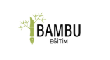

Deneyimler, Beceriler ve Sertifikalar
Profesyonel Deneyim
-

Esri Türkiye - Kampüs Elçisi
(Ankara/Türkiye, 2024-Günümüz)- ArcGIS eğitimleri düzenledi ve teknik destek sağladı.
-

Şişecam & Turkishe - "Geleceğe İlerleyen Kadınlar" Programı Katılımcısı
(Eylül 2025-Günümüz)- Liderlik, kişisel gelişim ve iş odaklı eğitim & mentorluk deneyimi kazanıyor.
-

T.C. Ulaştırma ve Altyapı Bakanlığı, Altyapı Yatırımları Genel Müdürlüğü - Stajyer
(Ankara/Türkiye, 06/2025-07/2025)- Yazılım entegrasyonu ve veri işlemeye katkıda bulundu; CBS ile altyapı projelerine destek verdi.
-

Kuzey Harita Mühendislik - Yaz Stajyeri
(Bodrum/Muğla, Yaz 2021, 2022 & 2023)- Netcad/QGIS/ArcGIS ile saha çalışması ve haritalama gerçekleştirdi.
Organizasyon ve Gönüllü Çalışmalar
-

Bamboo Education Platform
- Kurumsal İlişkiler ve Kaynak Geliştirme Takım Üyesi (08/2025-Günümüz) -

Geospatial Information Community
- Denetim Kurulu Üyesi (2024-Günümüz) -
Geospatial Information Community
- Uluslararası İletişim Koordinatörü (12/2023-12/2024) -
Bamboo Education Platform
- Gönüllü Eğitmen (06/2021-09/2022)
Temel Beceriler ve Diller
Coğrafi Bilgi Teknolojileri
- ArcGIS Haritalama ve Düzenleme
Yetenekler
- İletişim
- Ekip Çalışması
- Problem Çözme
- Hızlı Adaptasyon
Diller
- İngilizce - B2 Seviyesi
Sertifikalar
Esri Türkiye
- ArcGIS Kullanarak CBS'ye Giriş (2024)
- ArcGIS Pro'da Görüntü Analizi (2024)
- ArcGIS Experience Builder ile Web Uygulaması Oluşturma (2024)
- CBS Projelerinizi ArcMap'ten ArcGIS Pro'ya Aktarma İş Akışları (2025)
Turkcell
- Temel Linux Eğitimi 101 (2024)
- Temel Linux Eğitimi 201 (2024)
- Temel Linux Eğitimi 301 (2024)
- Temel Linux Eğitimi 401 (2024)